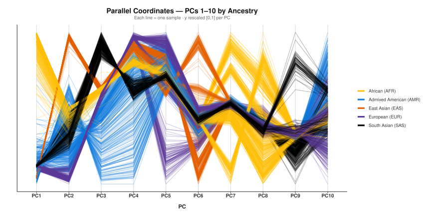

-
01
Pipeline Establishment
Develop and validate a QC pipeline for TOPMed genotyping and imputation.
-
02
Phenotype Extraction
Extract and harmonize clinical data and 3D CT-Scan derived imaging phenotypes.
-
03
Association Studies
Execute GWAS for aortic diameter and novel 3D image-derived phenotypes.
-
04
Multi-omic Integration
Conduct TWAS to map functional molecular signatures downstream of GWAS.
—

Bioinformatics Master's Thesis (2025/2026)
Multi-Omics Characterization of
Abdominal Aortic Aneurysm
via 3D Image-Derived Phenotypes
Author
Muhammad Umer Hussain Kousar
Institutions
Universitat Autònoma de Barcelona
Institut de Recerca Sant Pau (CERCA)
Institut de Recerca Sant Pau (CERCA)
01
Introduction
Disease Context & Multi-omic Landscape
AAA Disease Context
Abdominal Aortic Aneurysm is a progressive dilation of the abdominal aorta with high risk of asymptomatic rupture and significant mortality.
Multi-omic Research in AAA
01.
Genomics
Genome-wide approaches to identify common and rare variants associated with AAA susceptibility and progression.
02.
Transcriptomics & Proteomics
Functional molecular profiling to map gene expression and protein-level alterations in vascular tissues.
3D CT-Scan Rendering
Figure 1 | 3D CT-Scan Rendering. 3D reconstruction from CT-Scan aortic segmentation
Rationale for 3D Phenotypes
Standard AAA assessment relies on maximum diameter alone. 3D image-derived phenotypes from CT-Scans capture morphological and biomechanical complexity beyond traditional 2D measurements.
02
Objectives
Research Goals
General Objective
To identify novel genetic variants and molecular pathways associated with AAA by integrating genomic data with 3D image-derived morphological phenotypes.
Specific Aims
03
Materials & Methods
Study Design & Analytical Pipeline
Study Cohort
A comprehensively phenotyped cohort from Hospital de la Santa Creu i Sant Pau, with clinical histories, demographics, and matched radiological imaging.
Genotyping & Imputation Pipeline

Figure 2 | Imputation Pipeline. Pre-imputation QC → TOPMed Server → Post-imputation filtering (R² > 0.3, MAF > 0.01)
Phenotype Extraction
A.
Clinical Variables
Patient demographics, comorbidities, and risk factors systematically compiled from hospital records.
B.
Imaging Variables
Metrics derived from radiological data capturing AAA severity, growth rate, and morphological features.
3D Morphological Metrics
Figure 3 | 3D Morphological Metrics. Volume rendering, surface area, and tortuosity extraction
3D CT-Scan Processing
Automated segmentation and computational processing to derive volume, surface area, and geometric tortuosity beyond standard 2D diametric measurements.
GWAS Design
Linear mixed models accounting for population stratification and cryptic relatedness, testing both clinical markers and novel 3D phenotypes independently.
Post-GWAS: TWAS Methodology
TWAS Workflow Diagram
Figure 4 | TWAS Workflow. Pre-computed eQTL weights → imputed gene expression → association with vascular phenotypes
04
Results
Key Findings
Imputation Pipeline QC
QC Metrics Dashboard
Figure 5 | QC Metrics. Post-imputation variant yield after R² and MAF filtering
Cohort Demographics Table
Figure 6 | Cohort Demographics. Phenotypic summary of analytical cohort
Cohort Description
Well-characterized individuals reflecting typical AAA demographics. Significant heterogeneity in 3D imaging metrics highlights the value of fine-grained morphological profiling.
GWAS — Aortic Diameter
Manhattan Plot — Diameter
Figure 7 | GWAS for Aortic Diameter. Genome-wide association results for maximum aortic diameter
GWAS — 3D Image-Derived Phenotypes
Manhattan Plot — 3D Phenotypes
Figure 8 | GWAS for 3D Phenotypes. Distinct loci identified via 3D morphological features
TWAS Results Plot
Figure 9 | TWAS Results. Prioritized genes from TWAS analysis. we used GTEx data for whole blood and artery aorta to determine
TWAS Findings
Genetically predicted expression correlates with AAA 3D phenotypes, enriching pathways related to extracellular matrix remodeling and vascular smooth muscle cell function.
05
Discussion
Interpretation & Context
Interpretation of Findings
01.
GWAS / TWAS Integration
A systems-level view of AAA pathogenesis, moving beyond simple risk association towards mechanistic hypotheses.
02.
Novelty of Imaging Phenotypes
3D CT-derived features capture disease complexity that traditional diameter measurements miss entirely.
Literature & Limitations
03.
Existing Literature
Findings align with prior large-scale AAA studies for standard metrics; novel 3D loci address a recognized gap.
04.
Limitations
Sample size constraints typical for highly phenotyped cohorts. Multi-center replication is warranted.
06
Conclusions
Answering the Objectives
Key Takeaways
-
I
Pipeline Integrity
A validated high-throughput genotyping and imputation pipeline yielding high-quality variants.
-
II
Phenotypic Superiority
3D CT-derived variables provide more precise AAA severity representation than clinical measurements alone.
-
III
Genetic Architecture
3D phenotype GWAS uncovered distinct, uncharacterized loci for aneurysm morphology.
-
IV
Functional Mapping
TWAS prioritized biologically plausible target genes driving AAA pathology.
Ref
Sources
Bibliography
Selected Bibliography
- Wanhainen A, et al. (2019). ESVS Clinical Practice Guidelines on the Management of Abdominal Aorto-iliac Artery Aneurysms.
- Klarin D, et al. (2020). Genome-wide association study of abdominal aortic aneurysm identifies novel loci.
- Gamazon ER, et al. (2015). A gene-based association method for mapping traits using reference transcriptome data.
- Tardif JC, et al. (2021). Advanced 3D computational methods for phenotypic profiling of vascular anomalies.
Multi-Omics Characterization of
Abdominal Aortic Aneurysm
via 3D Image-Derived Phenotypes
Muhammad Umer Hussain Kousar